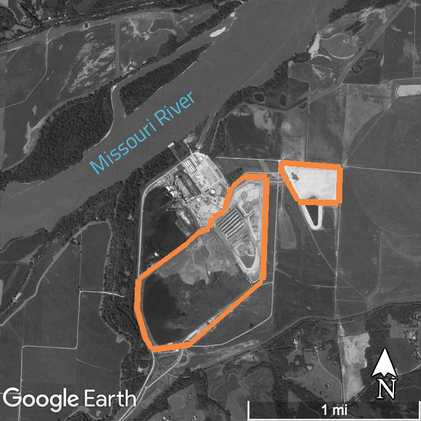
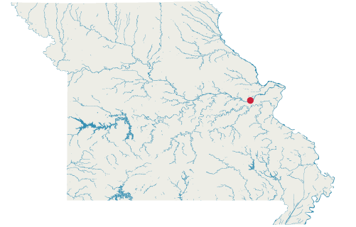
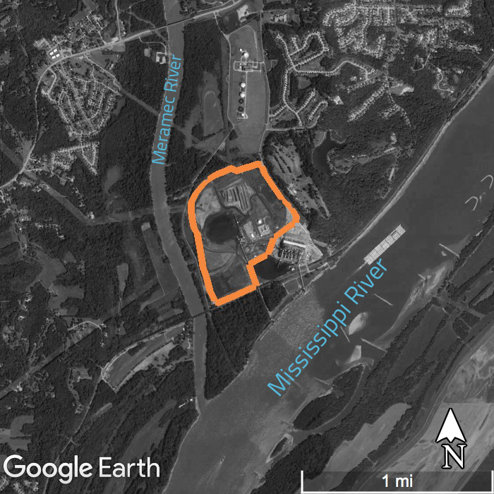
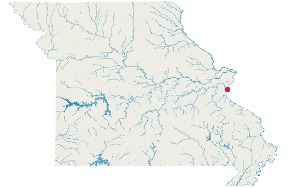
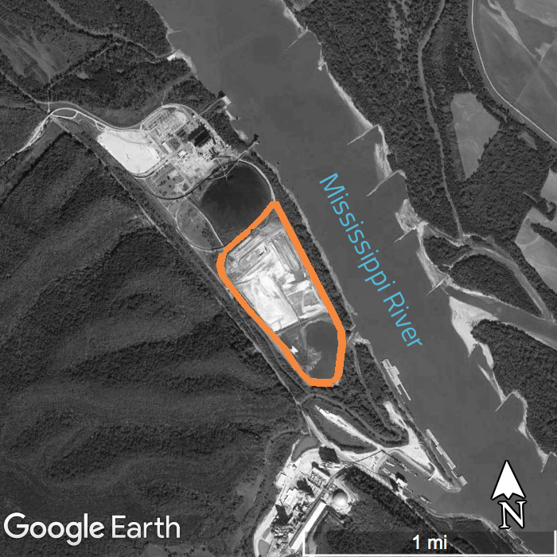
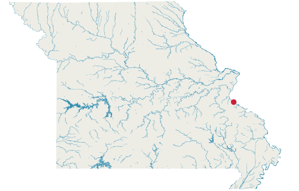
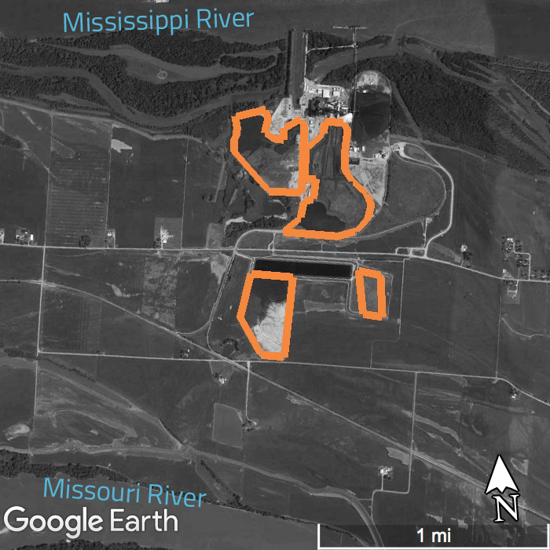
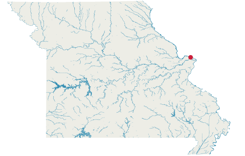

Many of the coal ash ponds and landfills associated with power plants in Missouri are near bodies of water. Ameren Missouri’s four power plants are near the Mississippi, Missouri and Meramec rivers. Ponds and landfills are outlined in orange.

Labadie
Ameren Missouri
Near: Missouri River


Meramec
Ameren Missouri
Near: Mississippi, Meramec rivers


Rush Island
Ameren Missouri
Near: Mississippi River


Sioux
Ameren Missouri
Near: Mississippi, Missouri rivers
